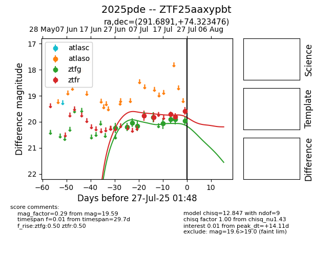

Target 2025pde at 2025-07-27 01:48, see:
FINK: fink-portal.org/2025pde
Lasair: lasair-ztf.lsst.ac.uk/objects/2025pde
ALeRCE: alerce.online/object/2025pde
TNS: wis-tns.org/object/2025pde
YSE: ziggy.ucolick.org/yse/transient_detail/2025pde
alt names
ZTF25aaxypbt (ztf,fink)
2025pde (tns,yse)
coordinates:
equatorial (ra, dec) = (291.6891,+74.32348)
galactic (l, b) = (105.9770,+23.71012)
photometry
last ztfg=19.96, ztfr=19.59
9 ztfg, 5 ztfr detections
